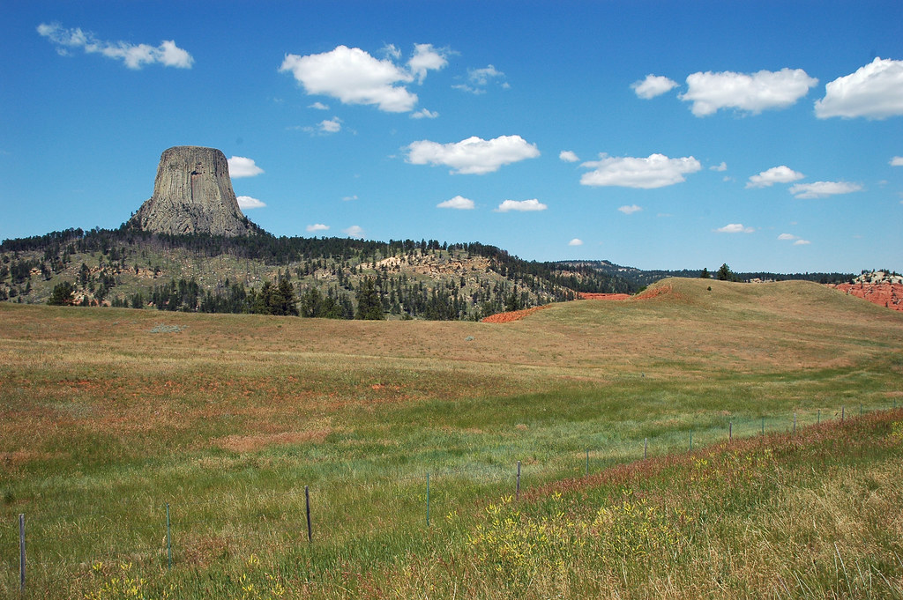

The United States Department of Interior | Home | Sources | Quiz |
The United States Department of Interior manages environmental and cultural concerns for the United States. Their mission includes protecting public lands, endangered wildlife, national parks, and indigenous people.
| Bureau/Office | Function |
|---|---|
| Bureau of Indian Affairs | They support tribal governments, maintain relationships, and maintain the rights of AIAN individuals. |
| Bureau of Indian Education | They provide education for diverse cultural groups by funding schools and skill-development programs. |
| Bureau of Land Management | They work to maintain the health and wellbeing of public lands. |
| Bureau of Ocean Energy Management | They manage the Outer Continental Shelf and its mineral resources for responsible energy use, sustainability, security, and economic development. |
| Bureau of Reclamation | They were established in 1902 to manage and develop water-related projects, including dams, power plants, and canals. |
| Bureau of Safety and Environmental Enforcement | They promote safety and environmental responsibility through their work in conversing offshore resources. |
| Bureau of Trust Funds Administration | They provide bank and investment services to American Indians for trust fund money earned. The assets acquired are from business activities conducted on Federally-owned land. |
| National Park Service | They were created in 1916 to protect the national parks by partnering with tribes, local governments, nonprofits, and other individuals to preserve the environment and history. |
| Office of Surface Mining Reclamation and Enforcement | They were created in 1977 to ensure cleanup and responsible conduct within coal mining operations. |
| U.S. Fish and Wildlife Service | They work to conserve fish, wildlife, and plants by enforcing environmental protections. |
| U.S. Geological Survey | They research, analyze, and advise the federal government about pertinent scientific information such as hazards, resource usage, and environmental health. |
| Office of the Secretary | Secretary Deb Haaland was the first Native American woman to be cabinet secretary. Her office manages the development and legal responsibilities of the Department of Interior. |
| Office of Policy, Management, and Budget | They manage operations and management for various functions necessary for the Department of Interior to succeed in their missions. |
| Office of the Solicitor | They perform legal work and uphold ethical standards for the entire organization. |
| Office of the Inspector General | They perform oversight and auditing services to maintain integrity and efficiency for other functions of the Department of the Interior. |
| Office of the Chief Information Officer | They use IT tools and systems to support the efficiency and accessibility of public information. |
| Office of Natural Resource Revenue | They account for, verify, and ensure transactional accuracy for all annual revenue owed from the development of energy and natural resources. |
| Office of Subsistence Management | They provide support for rural Alaskans who live the subsistence way of life. Subsistence means that they live off the land and maintain their cultural traditions. The Federal Subsistence Management Program supports fish and wildlife conservation in these areas. |
As of 2022, the Department of Interior is focusing on addressing the challenges brought forth by the COVID-19 pandemic. These challenges, such as economic stability and climate change, are embedded within the typical responsibilities of maintaining environmental protections, maintaining good relationships with Tribes, and protecting public lands and wildlife.